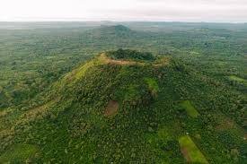

ສະຖານທີ່ທ່ອງທ່ຽວຍອດນິຍົມ
ຫຼວງພະບາງ
ເມືອງມໍລະດົກໂລກທີ່ມີຄວາມງາມທາງວັດທະນະທຳ ແລະ ທຳມະຊາດ, ມີວັດວາອາຮາມເກົ່າແກ່ ແລະ ນ້ຳຕົກຕາດກວາງຊີທີ່ສວຍງາມ.
ອ່ານເພີ່ມເຕີມ
ວັງວຽງ
ເມືອງທ່ອງທ່ຽວທີ່ມີທິວທັດພູຜາຫີນປູນອັນສວຍງາມ, ເປັນສະຖານທີ່ເໝາະສຳລັບການຜະຈົນໄພ ແລະ ພັກຜ່ອນ.
ອ່ານເພີ່ມເຕີມນະຄອນຫຼວງວຽງຈັນ
ເມືອງຫຼວງຂອງປະເທດລາວທີ່ມີສະຖາປັດຕະຍະກຳອັນເກົ່າແກ່, ວັດພະທາດຫຼວງ ແລະ ປະຕູໄຊທີ່ເປັນສັນຍາລັກຂອງເມືອງ.
ອ່ານເພີ່ມເຕີມສີ່ພັນດອນ
ເຂດພາກໃຕ້ຂອງລາວທີ່ມີເກາະນ້ອຍໃຫຍ່ຫຼາຍພັນເກາະໃນແມ່ນ້ຳຂອງ, ເປັນສະຖານທີ່ພັກຜ່ອນທີ່ສະຫງົບ ແລະ ງຽບສະຫງັດ.
ອ່ານເພີ່ມເຕີມທົ່ງໄຫຫິນ
ສະຖານທີ່ທ່ອງທ່ຽວທາງປະຫວັດສາດທີ່ມີໄຫຫິນຂະໜາດໃຫຍ່ກະຈາຍຢູ່ທົ່ວທົ່ງພຽງ, ເປັນສະຖານທີ່ລຶກລັບທີ່ນັກທ່ອງທ່ຽວນິຍົມໄປຢ້ຽມຊົມ.
ອ່ານເພີ່ມເຕີມ

ພູພຽງບໍລະເວນ
ເຂດພູພຽງທີ່ມີນ້ຳຕົກສວຍງາມຫຼາຍແຫ່ງ ແລະ ເປັນແຫຼ່ງປູກກາເຟທີ່ມີຊື່ສຽງຂອງລາວ, ເໝາະສຳລັບການທ່ອງທ່ຽວທຳມະຊາດ.
ອ່ານເພີ່ມເຕີມ